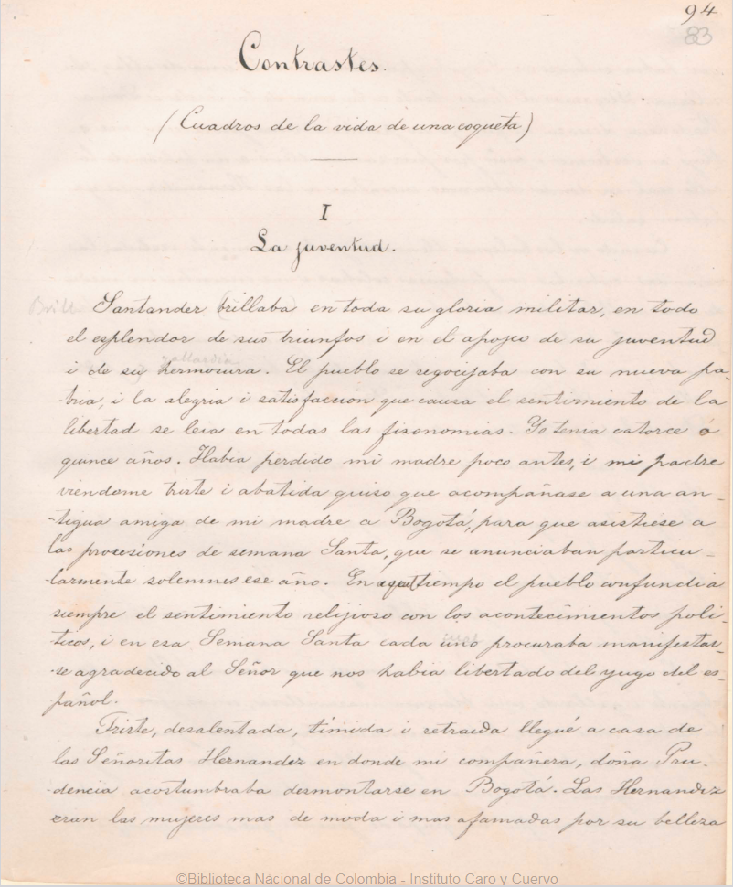

ES : Luz y sombra fue publicada por primera vez en el periódico El Iris, I/11 (22 abr. 1866): 122–124; I/12 (29 abr. 1866): 136–138; I/13 (6 may. 1866): 147–149. Firmado: Aldebarán. Impreso en Bogotá por la Imprenta Constitucional (N. Pontón).
FR : Luz y sombra paraît pour la première fois dans le périodique El Iris, I/11 (22 avril 1866) à I/13 (6 mai 1866). Signé : Aldebarán. Imprimé à Bogotá, Imprenta Constitucional (N. Pontón).
Version numérisée par la Biblioteca Nacional de Colombia (2019).

ES : El texto aparece en el conjunto manuscrito Borradores de artículos varios: (inéditos) (1869), redactado entre 1864 y 1869.
FR : Le texte figure dans le recueil manuscrit Borradores de artículos varios: (inéditos) (1869), rédigé entre 1864 et 1869.
Manuscrit conservé y digitalisé por el Instituto Caro y Cuervo, référencé dans le catalogue de la Biblioteca Nacional de Colombia.
Licence : CC BY-NC-ND.
ES : El texto fue reproducido con el título Luz y sombra en Novelas y cuadros de la vida suramericana, Gante, Imprenta de E. Vanderhaeghen, 1869 (pp. 379–398).
FR : Le texte est repris sous le titre Luz y sombra dans Novelas y cuadros de la vida suramericana, Gand, Imprimerie E. Vanderhaeghen, 1869 (pp. 379–398).